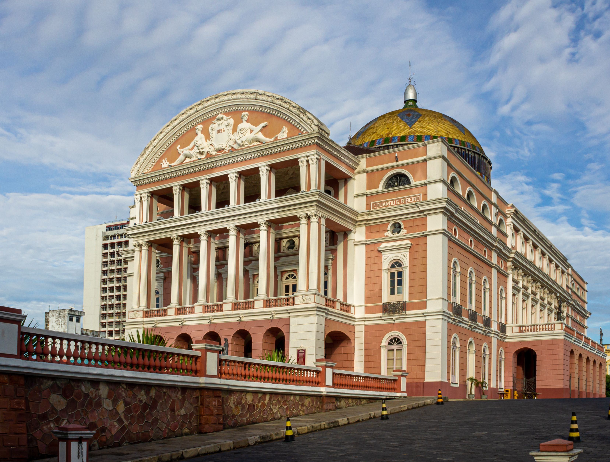
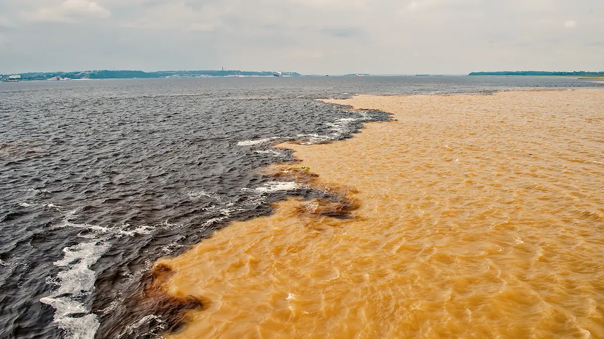
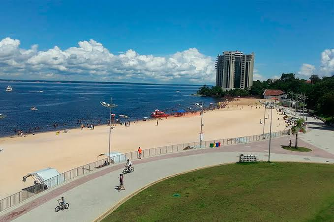

Lugares em Destaque

Cultura
Teatro Amazonas
Um dos mais belos teatros do mundo, construído no auge da borracha.
Ver Detalhes
Natureza
Encontro das Águas
Fenômeno natural onde dois rios correm lado a lado sem se misturar.
Ver Detalhes